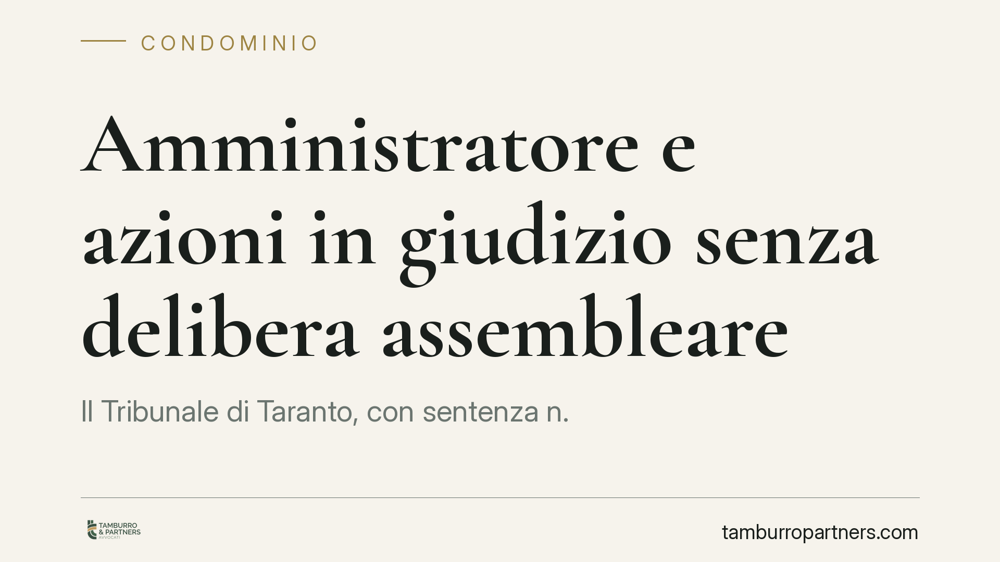

Amministratore e azioni in giudizio senza delibera assembleare
Il Tribunale di Taranto, con sentenza n. 1069/2026, ha ribadito un principio di rilievo pratico: l'amministratore di condominio può agire in giudizio per tutelare stabilità, sicurezza e decoro dell'edificio senza previa autorizzazione dell'assemblea. Rientra in questo perimetro anche l'azione contro il costruttore per gravi difetti. Una precisazione che incide direttamente sulla tempestività della difesa delle parti comuni.

Il caso
Il Tribunale di Taranto, Sezione I, con la sentenza n. 1069/2026 del 22 maggio 2026, ha affrontato una questione ricorrente nel contenzioso condominiale: quando l'amministratore deve procurarsi il via libera dell'assemblea per portare il condominio in tribunale e quando, invece, può muoversi da solo.
La pronuncia conferma un orientamento ormai consolidato. Per gli atti che rientrano nelle attribuzioni proprie dell'amministratore, in particolare quelli diretti alla conservazione delle parti comuni, non serve alcuna autorizzazione preventiva. L'azione è legittima anche se l'assemblea non si è mai espressa.
Inquadramento normativo
Il punto di partenza è l'art. 1130 cod. civ., che tra i compiti dell'amministratore include il n. 4: compiere gli atti conservativi relativi alle parti comuni dell'edificio. La conservazione comprende tutto ciò che serve a mantenere l'integrità materiale e giuridica del bene comune.
L'art. 1131 cod. civ. definisce la rappresentanza processuale. Al primo comma, l'amministratore può agire in giudizio nei limiti delle sue attribuzioni: qui rientra, appunto, l'attività conservativa dell'art. 1130 n. 4. Diverso è il caso del secondo comma, relativo alle liti che esorbitano da quelle attribuzioni, per le quali la delibera assembleare resta necessaria.
La chiave di lettura è la distinzione tra atto conservativo e atto di gestione straordinaria. Il primo tutela il bene da un pericolo o da un pregiudizio; il secondo attiene a scelte di merito che spettano alla collettività dei condomini. L'art. 1133 cod. civ., infine, rende i provvedimenti dell'amministratore obbligatori per i condomini, salvo ricorso all'assemblea.
La sentenza estende espressamente questo perimetro all'azione prevista dall'art. 1669 cod. civ., la responsabilità del costruttore per rovina e gravi difetti dell'opera. Agire contro il costruttore per difetti che minacciano stabilità e sicurezza dell'edificio è, a tutti gli effetti, un atto conservativo. Non richiede quindi autorizzazione preventiva.
Implicazioni pratiche
Per l'amministratore la conseguenza è concreta. Davanti a un difetto strutturale, a infiltrazioni che compromettono le parti comuni o a un pericolo per la sicurezza, può attivarsi subito, anche senza attendere la convocazione e il voto dell'assemblea.
Questo ha un peso rilevante sui termini. L'azione ex art. 1669 cod. civ. è soggetta a decadenza: la denuncia dei gravi difetti va fatta entro un anno dalla scoperta e l'azione va esercitata entro l'anno successivo alla denuncia. Attendere una delibera può far maturare la decadenza e vanificare ogni pretesa verso il costruttore.
Per i condomini il principio è un presidio di tutela. L'edificio non resta esposto al deterioramento solo perché l'assemblea non è stata convocata o non ha raggiunto il quorum. L'amministratore ha il potere, e spesso il dovere, di intervenire.
Resta però un limite da tenere presente. La linea di confine tra atto conservativo e lite di merito non è sempre netta. Un'azione risarcitoria complessa, una domanda che implica scelte di indirizzo o rinunce, può ricadere nel secondo comma dell'art. 1131 cod. civ. e richiedere la delibera. In caso di dubbio, una verifica preventiva evita contestazioni sulla legittimazione.
Cosa fare in concreto
- Documentate la scoperta del difetto. Fissate con precisione la data in cui il vizio è emerso: da lì decorrono i termini di decadenza dell'art. 1669 cod. civ.
- Agite tempestivamente sui gravi difetti strutturali: la denuncia e l'azione hanno termini stretti e l'attesa di una delibera può pregiudicare la pretesa.
- Qualificate l'azione. Verificate se rientra tra gli atti conservativi (nessuna autorizzazione) o tra le liti del secondo comma dell'art. 1131 (delibera necessaria).
- Informate comunque l'assemblea. Anche quando l'autorizzazione non serve, consigliamo di rendere conto dell'iniziativa per trasparenza e per la ripartizione delle spese.
- Richiedete un parere preliminare nei casi di confine, prima di instaurare il giudizio, così da prevenire eccezioni sulla legittimazione processuale.
Disclaimer
Contributo informativo a cura di Tamburro & Partners - Avv. Giuseppe Tamburro. Non costituisce parere legale.
Ogni condominio ha una storia a sé.
Se gestisci un'amministrazione e vuoi un confronto su una specifica questione condominiale, scrivi allo studio. Ti rispondiamo entro un giorno lavorativo.